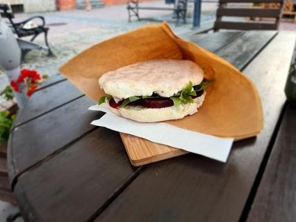
N°01
Burak & feta
Pieczony burak, feta, świeża zielenina i krople balsamico. Nasz najczęściej zamawiany wegetariański klasyk.
Rynek 22, Sanok · otwarte codziennie od 11:00
Podkarpacki placek pieczony na gorącej blasze na Twoje zamówienie, nadziewany na ciepło — od bryndzy z miętą po kiełbasę z dzika.
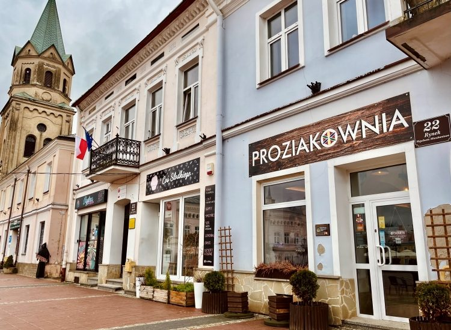
Proziak to placek, który w podkarpackich domach piekło się „na prędce” — z mąki, kwaśnego mleka i sody, bez drożdży i bez czekania. Prosto na blachę kuchni węglowej.
My robimy to samo, tylko codziennie i na oczach gości. Ciasto ląduje na rozgrzanej płycie, rośnie, łapie chrupiącą, plamistą skórkę, a w środku zostaje miękkie i puszyste. Każdy proziak pieczemy dopiero wtedy, gdy go zamawiasz.
Wybierz rozmiar
Na szybki obiad w biegu po Rynku.
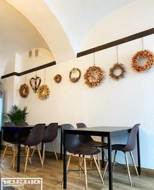
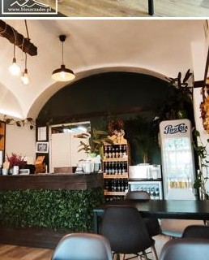
Zaczęło się od food trucka. Jedna blacha, jeden przepis i goście, którzy wracali po więcej — aż truck zrobił się za mały.
Truck dostał stały adres. W kamienicy na sanockim Rynku, pod sklepionym sufitem, otworzyliśmy Proziakownię — w 100% skupioną na świeżo pieczonych proziakach.
Jesteśmy na „Szlaku Kulinarnym Podkarpackie Smaki”, a latem stoliki wychodzą na płytę Rynku. Blacha dalej ta sama — gorąca od 11:00.
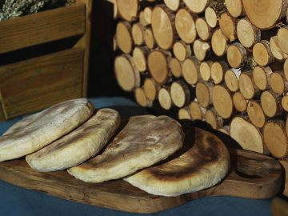
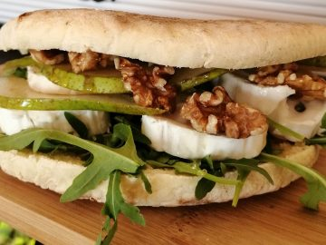
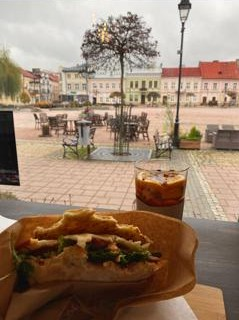
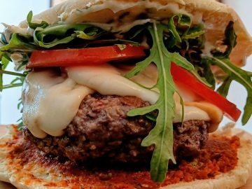
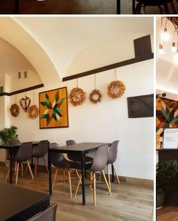
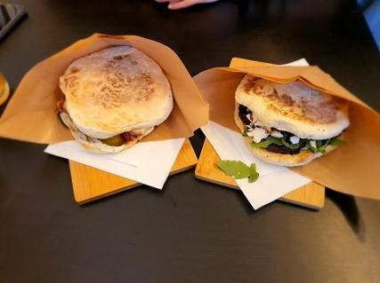
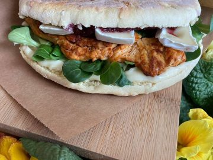
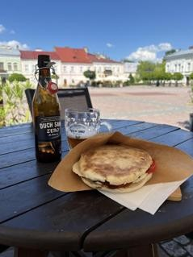
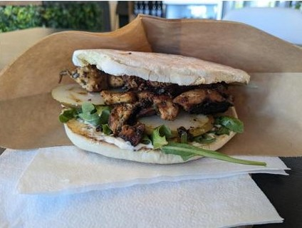
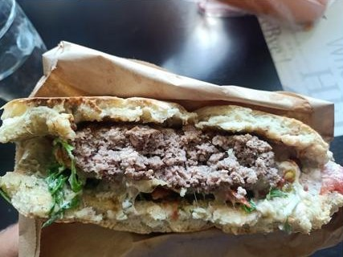
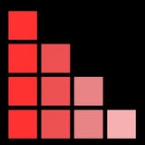
WYOUO CORPORATION